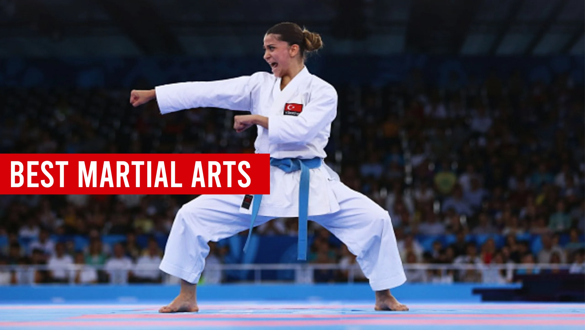
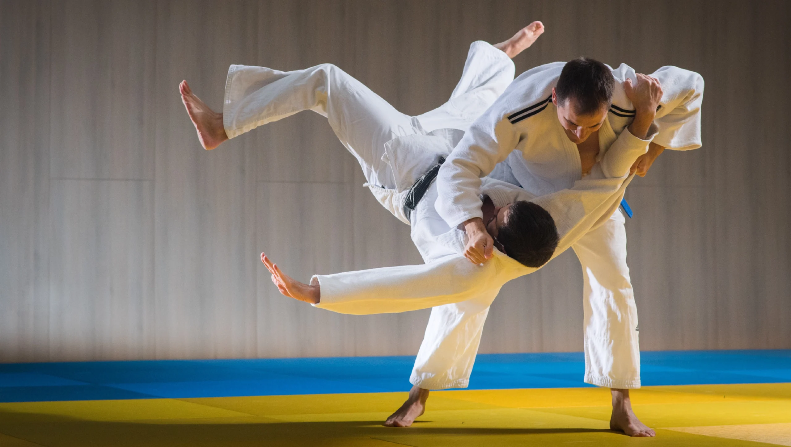
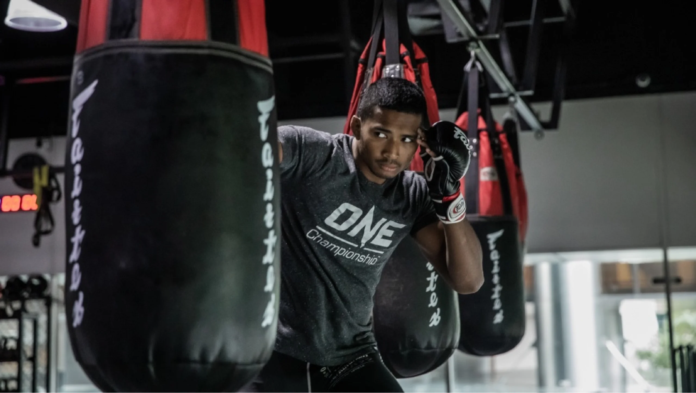

Best Martial Arts for Self-Defense: Which Style Suits You?

Introduction
In today’s world, self-defense is increasingly important, and understanding the best martial arts for self-defense can empower individuals. Each martial arts discipline offers unique techniques, philosophies, and benefits, from traditional styles like Karate and Judo to contemporary practices like Krav Maga and Brazilian Jiu-Jitsu. The journey to finding the right martial art involves considering personal goals, fitness levels, and training environments.
Training in martial arts provides numerous advantages, extending beyond self-defense skills. Participants often experience improved physical fitness, increased confidence, and valuable mental discipline. Additionally, martial arts foster a sense of community, allowing individuals to form lasting connections with fellow practitioners while sharing challenges and successes in their training.
Safety is paramount in martial arts training; practitioners are encouraged to use protective gear and focus on injury prevention through proper conditioning. While mastering self-defense techniques is crucial, awareness and avoidance strategies are equally significant in real-life situations. Ultimately, choosing the right martial art relies on personal preferences and commitment, making it essential to explore various styles to find a suitable match.
In today’s world, knowing how to defend oneself is more important than ever. Understanding the best martial arts for self-defense can empower individuals in various situations. Whether you’re looking to boost your confidence, improve your fitness, or simply want to feel safer, finding the right martial arts style can make all the difference. This article aims to guide you through the plethora of martial arts available, helping you identify which style suits your personal needs and circumstances.
Key Points to Include:
- Importance of self-defense in today’s society.
- Overview of martial arts as a system for personal protection.
- Brief mention of various styles covered in the blog.
Overview of Martial Arts
Martial arts have a rich history that goes back thousands of years. They originated as methods of combat and personal protection, evolving into the diverse forms we see today.
- Historical Background of Martial Arts: Many martial arts trace their roots to ancient civilizations. For example, Karate originated in Okinawa, while Judo was developed in Japan in the late 19th century.
- Importance of Martial Arts in Different Cultures: Across the globe, martial arts have been integral to cultural identity. They teach discipline, respect, and self-control, alongside physical skills.
Traditional Martial Arts for Self-Defense
Traditional martial arts often focus on self-defense techniques, combining physical skills with mental discipline.
Karate
- Origins and Philosophy: Karate originated in Okinawa and emphasizes striking techniques. It’s about more than just fighting; it’s a way of life.
- Key Techniques for Self-Defense: Punches, kicks, and blocks are vital. Karate teaches how to use your body efficiently for self-protection.
Taekwondo
- Focus on Kicks and Flexibility: Taekwondo is known for its dynamic kicking techniques. It’s a great way to develop flexibility and strength.
- Defensive Concepts and Awareness: Taekwondo also teaches awareness, helping practitioners avoid conflicts whenever possible.
Judo
- Use of Throws and Grappling: Judo focuses on using an opponent’s weight against them, making it effective in close encounters.
- Strategies for Self-Defense Situations: Judo teaches how to fall safely, which is crucial in self-defense scenarios.
Contemporary Martial Arts Styles
Modern martial arts often emphasize practical self-defense techniques that are applicable in real-world situations.
Krav Maga
- Israeli Self-Defense Techniques: Krav Maga is designed for real-life situations, focusing on effective self-defense against armed and unarmed attackers.
- Emphasis on Real-World Scenarios: This style teaches defensive maneuvers that are straightforward and effective, making it popular among those serious about self-defense.
Brazilian Jiu-Jitsu
- Grappling and Ground Fighting: Brazilian Jiu-Jitsu (BJJ) is all about leverage and technique, allowing smaller individuals to defend against larger opponents.
- Effective Techniques Against Larger Opponents: BJJ focuses on submissions and control, making it a top choice for self-defense.
Mixed Martial Arts (MMA)
- Combination of Various Fighting Styles: MMA blends techniques from different martial arts, providing a well-rounded approach to combat.
- Focus on Versatility and Control: The training involved in MMA significantly enhances endurance and adaptability, giving practitioners the ability to respond effectively in various situations.

Benefits of Martial Arts Training
Training in martial arts offers a plethora of benefits beyond just learning self-defense techniques:
- Physical Fitness and Health: Many martial arts practices involve rigorous physical training that builds strength, flexibility, and cardiovascular fitness.
- Mental Discipline and Confidence: Learning self-defense techniques boosts confidence, making you feel more secure in your daily life. The mental focus required in martial arts fosters self-discipline that translates to other areas.
- Social Aspects and Community Building: Joining a martial arts class helps forge connections with like-minded individuals. Sharing challenges in training can create lasting friendships and a supportive community.
Finding the Right Class or Instructor
Once you’ve decided which martial arts style appeals to you, the next step is finding the right class or instructor. Here are some tips:
- Qualification of Instructors: Look for classes taught by experienced and certified instructors. Their skills and knowledge can greatly impact your learning experience.
- Class Size and Training Environment: Smaller class sizes often mean more personalized attention, while a positive training environment will encourage growth and learning.
- Curriculum Focus: Different instructors may emphasize various aspects of martial arts. Ensure the curriculum aligns with your goals, whether you’re interested in self-defense, fitness, or competition.
Cost and Commitment
Considering a martial arts class? Be prepared for both financial and time commitments.
- Tuition Fees for Classes: Prices vary widely based on location and the type of martial arts. Some classes might offer discounts for long-term commitments or family memberships.
- Equipment Purchases and Ongoing Expenses: Depending on the style, you may need to invest in uniforms, sparring gear, or additional training equipment.
- Time Commitments for Practice and Progression: Advancement in martial arts can require consistent attendance and practice. Weekly classes combined with personal training can hasten your progress.
| Cost Breakdown | Details |
|---|---|
| Class Fees | $50-$200/month depending on location |
| Gear | $50-$300, depending on the martial art |
| Testing Fees | $20-$100 per belt/test |
| Other Expenses | Travel for competitions, seminars |

Safety Considerations
Safety is key in martial arts training. Here are some helpful measures to consider:
- Importance of Sparring Gear: When engaging in sparring or practicing self-defense techniques, wearing protective gear is essential to prevent injuries.
- Role of Fitness in Injury Prevention: Improved fitness through martial arts helps avoid injuries. A strong and flexible body can better handle the physical demands of training.
Self-Defense Beyond Martial Arts
While martial arts provide excellent skills for self-defense, awareness is also crucial. Here are a few broader self-defense strategies:
- Importance of Awareness and Avoidance: Being aware of your surroundings can often prevent dangerous situations. Staying alert and recognizing potential threats helps in avoiding conflicts.
- Basic Self-Defense Techniques Anyone Can Learn: Simple techniques such as knowing how to break away from a wrist grab or understanding the importance of distance can be invaluable. These fundamentals can be taught in self-defense classes outside of traditional martial arts.
Personal Stories and Testimonials
Hearing from those who have trained in martial arts can be inspiring. Here are a couple of quick stories:
- Real-Life Applications of Martial Arts in Self-Defense: A former student shared how their training in Krav Maga gave them the confidence to confront an aggressive individual while waiting for public transport. Their training taught them the importance of awareness and how to respond effectively.
- Psychological Impacts of Training: Another practitioner noted how Brazilian Jiu-Jitsu changed their life, not just by giving them defensive skills but also by helping them overcome personal insecurities and build lasting friendships.
Conclusion
Choosing the best martial arts for self-defense ultimately comes down to your personal preferences and physical readiness. Each martial art has its unique offerings and focuses, making it essential to identify what resonates most with you. Whether you’re looking to learn effective self-defense techniques or enhance your fitness through martial arts, there’s a style out there for everyone.
- Recapping the importance of training through martial arts shows that it offers valuable self-defense skills while promoting personal growth.
- I encourage you to explore different styles and find the best fit for your needs.
- Remember, beyond the self-defense techniques and training, martial arts can foster friendships, discipline, and confidence that last a lifetime.
So, what martial art are you considering trying out? Let me know, and happy training!
The Martial Arts Industry Association
FAQ's
The best martial art for beginners depends on personal goals and preferences. Brazilian Jiu-Jitsu (BJJ) is favored for its focus on technique, making it accessible for all. Karate is also a strong choice, emphasizing basic movements and self-discipline. It’s beneficial for beginners to try different classes to find what suits them best.
There is no age limit for starting martial arts! People of all ages can benefit from training. Many schools offer adult classes that cater to newcomers, allowing them to learn at their own pace and enjoy the physical and mental benefits of martial arts.
The cost of martial arts training varies by school, location, and class types. Many schools offer flexible pricing, including monthly memberships or per-class fees. It’s wise to explore different options to find a budget-friendly school that meets your needs.
Participation costs typically range from $100 to $150 per month for memberships, with per-class rates between $15 and $30. Annual memberships may be available for $800 to $1,200, often providing savings. Additionally, consider any extra fees for uniforms and equipment.
For your first day, wear comfortable athletic clothing. Most schools will provide a uniform (like a gi) for you to wear once you enroll, but you want to be ready to move in whatever you choose! Just check with the school beforehand to see if they have any specific requirements.
The time it takes to earn a belt varies widely based on the martial art and your dedication. Generally, it can range from 3 months to several years. Factors influencing this timeline include attendance, effort, and the specific belt progression system of the style you are learning.
Absolutely! Martial arts classes are intended for all fitness levels. Many schools offer beginner programs that help you gradually build your strength and flexibility, so don’t worry if you’re starting from scratch!
Train with us in Coppell
The first class is free. Shorts, a t-shirt and a water bottle. We lend the rest.
Book a free class